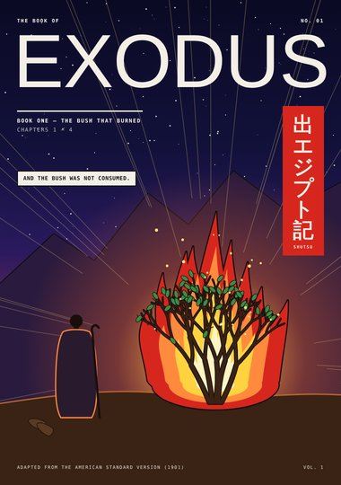
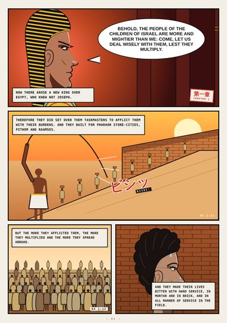
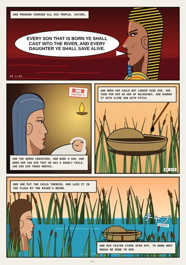
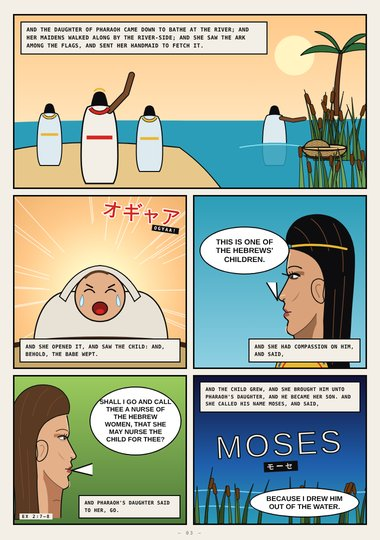
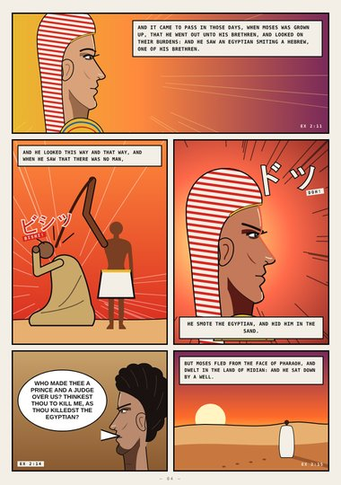
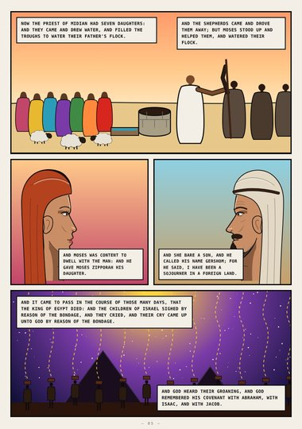
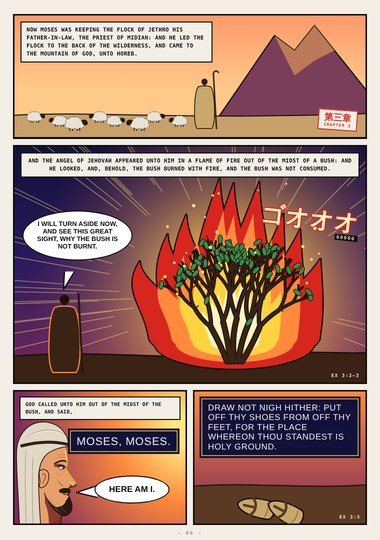
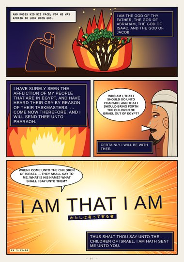
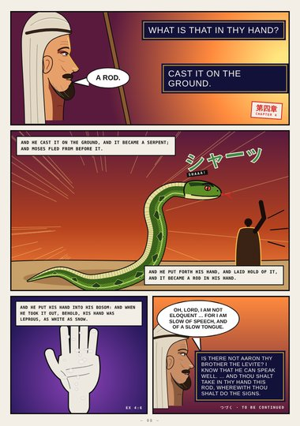

Exodus (digest) · Book One · Exodus 1–4
The Bush That Burned
The new king who knew not Joseph, the ark of bulrushes, Moses in Midian, the burning bush, I AM THAT I AM, and the rod.
Digest edition: an early, abridged first draft (highlights only). The full edition is replacing it.
Start reading ›Pages

CoverCoverExodus 1–4
Page 1A New KingExodus 1:8–14
Page 2The Ark of BulrushesExodus 1:22–2:4
Page 3Drawn Out of the WaterExodus 2:5–10
Page 4The EgyptianExodus 2:11–15
Page 5The Well in MidianExodus 2:16–25
Page 6The BushExodus 3:1–5
Page 7I AMExodus 3:6–14
Page 8The RodExodus 4:1–17